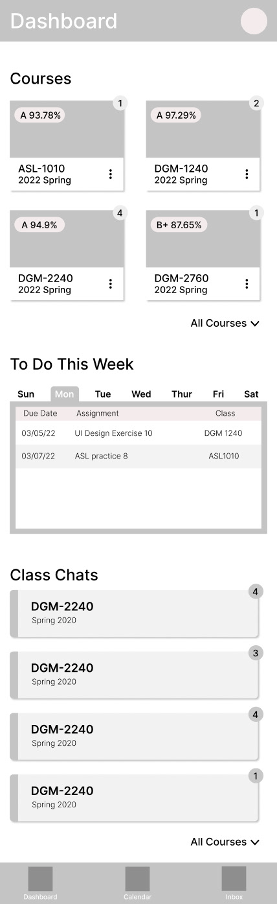
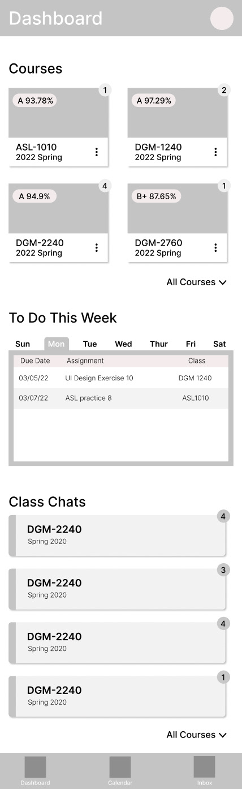

Painting On a New Canvas
Introduction
As the world of schooling continues to evolve, many new tools have modernized teachers and students' approaches to education. One of these tools that has seen widespread implementation is Canvas. In this study, my team and I took a look at how we could possibly improve this site's usability and add useful tools that will aid students and professors in their daily academic endeavors. My role in this was to create a new design for Canvas that conformed more to conventional wayfinding while removing unnecessary content and adding new helpful functionalities.

What Happened
Getting Started
First things first, we needed to create sketches for what we envisioned the website becoming. Having used Canvas for many years, I did not feel that there needed to be a complete overhaul to the original canvas design. There were a lot of good designs on the mobile app and the desktop website that I did not want to change. I felt that rebuilding everything from the ground up would be counterproductive to our goals and would cause more user confusion than it would alleviate. Though I did completely redesign a couple of pages, I focused mainly on making small tweaks such as removing confusing or unused elements and adding new helpful tools.
Creating Designs
After sketching out my ideas, I got to work creating wireframes. Here is a list of things that I added to the new design:
- A weekly to-do list on the dashboard
- Grades appear on the course cards
- Class chat buttons/cards on mobile
- Class chat icon on the desktop course cards
- Notification icons on the top right of course cards on mobile and desktop
- Bookmarks tab for bookmarked assignments
- A class chat page for mobile and desktop
Here is what I took away from the original design:
- Removed the courses tab and combined it with the dashboard tab
- Removed the courses tab and combined it with the dashboard tab
- Removed the live help tab
- Removed the groups tab
- Removed the original to do column on right side of the screen
Other changes I made: include
- Assignment submission now appears as a card hovering above the assignment details on the desktop
- Complete overhaul of the inbox
 


After creating wireframes for both mobile and desktop, my team and I got together and critiqued and revised our designs.I decided that the bookmarks tab was unnecessary and omitted it. I also condensed some of the menu items on the mobile hamburger menu into the settings section and removed the “home” option on the course dashboard page. After making these changes I hashed out these wireframes into high fidelity surface comps complete with colors and images.

Conclusion
I believe the biggest thing that I took away from this study was that you don’t always have to reinvent the wheel. From the beginning the website and the app for Canvas had plenty of good designs to work with so there was no reason to completely overhaul everything. By just making small tweaks here and there along with only a couple bigger changes I believe we were able to achieve all of our goals without causing any unnecessary pain points for users.